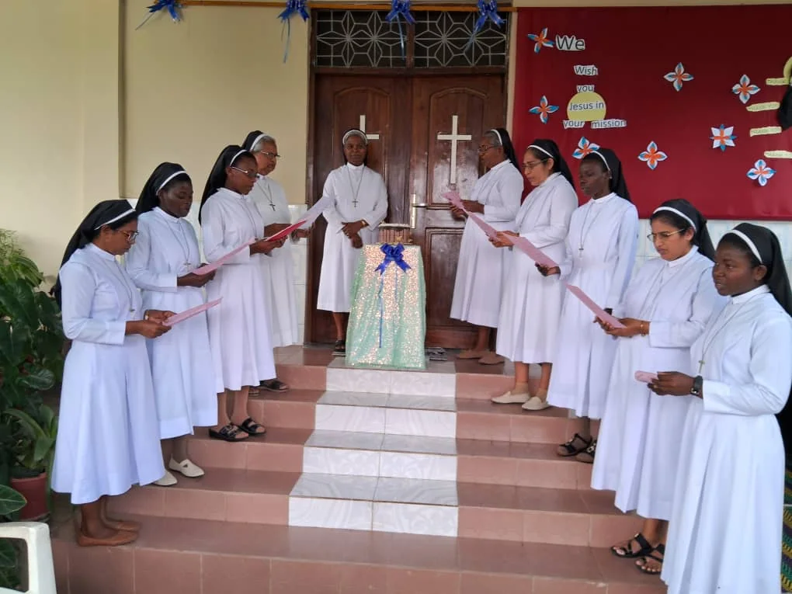
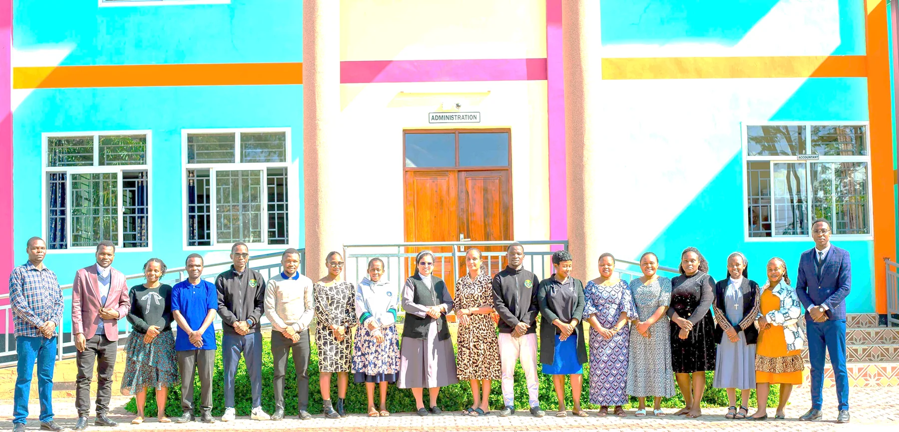
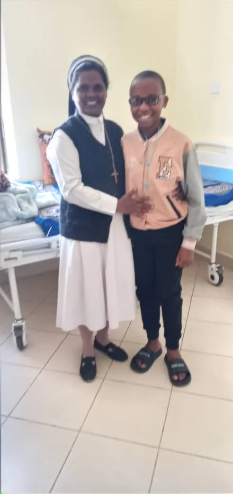

A community shaped by faith, thoughtful teaching and respectful relationships.
The About experience balances the institution’s Catholic heritage with a modern, confident story about learning and care.
The page layout gives administrators dedicated areas for school history, leadership messages, mission, vision, values, facilities and governance.

This content area can be managed as a reusable page block in Filament, with an image, heading, body copy and call to action.
The visual treatment is formal without being cold: deep plum from the crest, warm gold accents, generous cream surfaces and restrained crimson highlights.
Meet the community
Strategic leadership, parent communication and school operations.
Committed educators working across pre-primary and primary levels.

A visible culture of attention, encouragement and personal care.